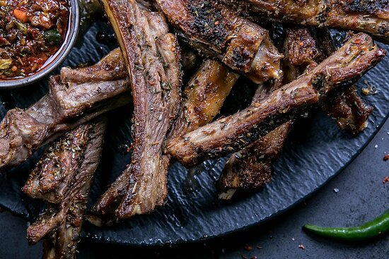

Home
Ribs

The Best Grilled Ribs
Ribs are just the best part, the tender meat grilled to perfection accompanied with fresh spices
Ingredients
- 1 rack of lamb ribs
- Salt and pepper
- 2 tablespoons paprika
- 1 tablespoon garlic powder
- 1 tablespoon brown sugar
- 1 teaspoon chili powder (optional)
- Your favorite BBQ sauce
- Aluminimum foil
Steps
- Preheat the oven to 150C
- Remove the thin membrane from the back of the ribs
- Mix all the dry spices in a small bowl to create a dry rub
- Season all the ribs generously on both sides with the dry rub
- Wrap the ribs tightly in foil and place them on baking sheet
- Bake in the over for 2.5 hours until tender
- Remove from the oven, unrap, and brush BBQ sauce over it
- Grill or broil for 5-10 minutes to caremelize the sauce.
- Let the ribs rest for a few mintures before cutting and serving